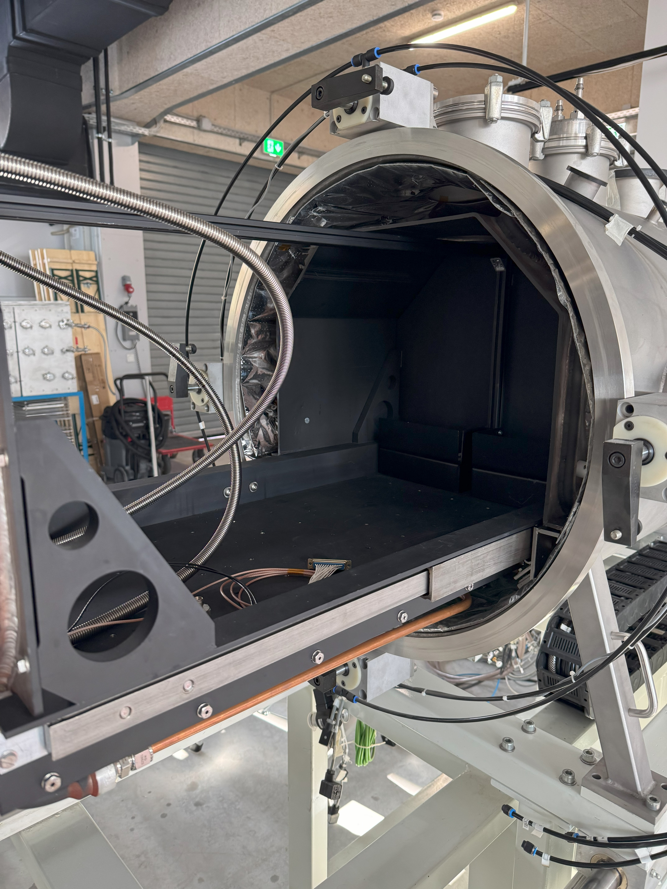
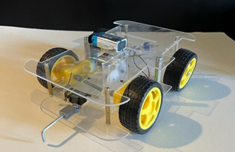

Projects
On this page you can explore the diverse range of work I have been involved in since the very first semester of my bachelor studies. The projects are categorized and marked with a symbol for Research Projects and symbol for Engineering / Design Projects
2025/26
ESA Flagship Mission to Enceladus (October 2025 to Present)
Master’s thesis project at the Chair of Space Mobility and Propulsion of the Technical University of Muinich. I have taken up the systems engineer role for a prospective ESA flagship mission to Enceladus. Currently working on the mission architecture and propulsion system design. It would apply ISRU of water harvested from the ice or plumes of Enceladus to power a Water Electrolysis Propulsion (WEP) system. My responsibilities include trajectory design and simulation on Astos, electrolyzer design, propulsion system modeling, and cross-domain system-level evaluations. Click on the project title for more information.
2025

Rocket Factory Augsburg (June 2025 to August 2025)
To complement my academic research with industrial perspective, I interned at Rocket Factory Augsburg (RFA) in the Systems Engineering department. There, I developed a risk assessment tool for safety-critical systems and applied it to Solenoid Valves, High Pressure Gas Storage, Thrust Vector Control, and Separation Systems. I also supported requirement management, safety analysis (FMEA), and architecture development throughout the launcher. Seeing how system-level decisions propagate down to components, and how component performance feeds back into architecture, gave me firsthand experience with change propagation in complex systems. I was also responsible for the systems reviews of ground launch systems, covering 21 systems including everything from tower umbilicals and pad water-deluge systems to fire protection, propellant handling, and storage. I reviewed P&IDs, the overall design ensuring it meets requirements, and documented every single system item, component and component type for ground launch systems. This role has been my most valuable professional experience, as I witnessed first-hand how systems engineering for a complex launcher and its ground infrastructure is performed. Click on the project title for more information.2024/25
Design and Analysis of a Cold Plate and Thermal Shroud for a Dirty Thermal-Vacuum Chamber (November 2024 to April 2025)
This project, as part of my research internship at the Lunar and Planetary Exploration group at TUM, involved the design and analysis of a cold plate and shroud for a thermal vacuum chamber (TVAC), aimed at replicating space-like thermal conditions for several proposed payloads to be tested. The cold plate was developed to cool down a bed of regolith simulant, while the shroud ensured effective thermal isolation. Simulations were conducted on COMSOL to evaluate the thermal performance of the setup, including heat transfer, temperature distribution, and vacuum compatibility. The study also included material selection and structural design to withstand vacuum loads and thermal cycling. This work aims to optimize the system for accurate and reliable testing of spacecraft and related components. Click on the project title for more information.


Mars Cycler (October 2024 to Present)
This project focuses on the in-orbit refuelling of a Mars cycler spacecraft. It explores the trade-offs between different mission concepts, including direct missions to Mars, non-reusable refuellers, and reusable refuellers, evaluating both quantitative and qualitative factors. The spacecraft systems design includes propulsion, power, thermal control, communication, ADCS, and onboard computers, alongside detailed payload integration for fuel storage, handling, and transfer. The primary focus is on rendezvous and docking simulations to optimize delta-v and fuel consumption, with additional thermal simulations and cost estimations to ensure the mission’s feasibility for long-duration Mars missions.Spacecraft Thermal Analysis and Test (October 2024 to Present)
TThe project focused on the thermal analysis and testing of the Mars InSight lander. Example thermal models were created in Julia to understand heat transfer in space and planetary environments. A detailed thermal model of the lander was developed using Thermal Desktop, and various analysis cases were simulated. The hardware was then prepared for a thermal-vacuum test, during which experimental data will be collected and analyzed. The results will then be used to correlate and validate the thermal model, encompassing the complete thermal development and qualification process for spacecraft and space exploration components.
Topology Optimization (October 2024)
This project focused on applying topology optimization to the design of a Falcon 9 landing leg to minimize mass while maintaining sufficient stiffness. Two load cases were considered: a vertical load of 22,200 N during a soft touchdown and a shear force simulating crosswinds or sliding during landing. The optimization process achieved a mass reduction of approximately 3,656 kg, translating to significant cost savings in the aerospace industry by reducing fuel requirements. The optimized design demonstrated the potential of topology optimization in achieving lightweight, efficient, and cost-effective aerospace structures.Event Camera Satellite (April 2024 to August 2024)
This project focused on designing a single spacecraft for object detection and tracking in Low Earth Orbit (LEO) using Event Camera technology and AI computational capabilities. The mission aimed to enhance space safety by preventing satellite collisions. The satellite, weighing 100–500 kg, featured a high-resolution event camera optimized for low power consumption and real-time processing with onboard AI. Subsystems were designed to meet mission requirements, including orbit selection, thermal regulation, propulsion, and efficient TT&C systems. This design demonstrated innovative solutions for safeguarding operational satellites and ensuring sustainable space activities.Permanently Shadowed Regions Demonstrator (May 2024 to July 2024)
This project aimed to create a demonstrater for the Permanently Shadowed Regions (PSRs) on the Moon. A collection of 3D-printed craters from the lunar poles was used, with an LED strip simulating the sun's movement and demonstrating shifting illumination patterns around the craters. The LED circuit, controlled by a Raspberry Pi 4, featured a light sensor that turned the LEDs off when not being observed. Additionally, a touchscreen interface in kiosk mode allowed users to explore Lunar data from NASA/LRO and other missions. The design included swappable craters, a sealed display case to prevent external light interference, and a reliable power supply for extended operation, making it an effective tool for visualizing and understanding lunar PSRs.2023/24
Mars on Earth Biosphere (November 2023 to December 2023)
This project, developed as part of a competition in which we won first place, focused on designing a controlled test-bed facility that simulates Martian environmental conditions to support diverse experiments. The facility includes three isolated compartments to test varying soil types, atmosphere compositions, and other factors critical for Mars-like conditions. Key parameters such as pressure, temperature, and atmospheric composition can be modified, while Martian soil is replicated using regolith simulants. Potential applications include testing the growth of edible plants under harsh conditions, evaluating genetically modified crops, and assessing energy requirements for sustaining life. Although limitations exist, such as accurately replicating Martian soil and radiation exposure, the facility aims to advance research on life support systems, soil fertility, and environmental control technologies for future Mars exploration.Air-breathing Electrostatic Thruster (February 2023 to June 2023)
This project focused on designing and testing air-breathing electrostatic thrusters for high-altitude applications, offering a propellant-free alternative to traditional ionic propulsion. Two multi-stage thruster designs were developed using copper wire grids as emitters and aluminum plates as collectors, significantly reducing ozone generation compared to needle-based designs. Tests explored optimal emitter-collector spacing, orientation, and stage configurations, revealing that parallel alignment and additional stages improved efficiency, though with diminishing returns due to airflow obstruction. Ground and microgravity tests, including parabolic flight experiments, validated the thrusters' performance, demonstrating their potential for clean, cost-effective propulsion in low-demand maneuvers like attitude control and station-keeping. This project produced two papers that can be seen here.Rotating Detonation Engines (February 2023 to June 2023)
A Numerical Simulation of Non-Circular Channels and Nozzles. This project built upon prior research indicating that tri-arc-shaped channels outperform other geometries in enhancing the performance of rotating detonation engines. A detailed analysis of flow within rotating detonation engines was conducted, examining eight distinct non-circular channel geometries. The detonation phenomena were simulated using Converge CFD, while flow behavior was analyzed with Ansys CFX. The results demonstrated that tri-arc-shaped engine channels offer superior stability for rotating detonation waves, providing valuable insights for advancing engine efficiency and performance.2022/23
Carbon Emission Price Forecasting (March 2022 to May 2023)
This project explored the application of Multifractal Detrended Fluctuation Analysis (MFDFA) to carbon emission price forecasting, a novel approach in this field. A historical dataset of carbon emission prices, spanning over 12 years with 3,071 entries, was analyzed to identify variations in the fractal structure of the signal. The dataset was also processed through a neural network to forecast spot and futures prices. MFDFA was applied to the error signal of the neural network to assess the accuracy of predictions. The analysis yielded promising results, with an average root-mean-square error of 0.660 during training and 0.771 during prediction. Further, trimming the error signal reduced variance by 68.8%, demonstrating the potential of combining MFDFA and neural networks for improving accuracy in carbon emission price forecasting. This research highlights a significant step toward innovative methods in environmental and economic analysis.
Turbojet Engine Modeling (November 2022 to January 2023)
This project focused on modeling a turbojet engine using Simulink in MATLAB to simulate its performance. Each major component of the engine, including the compressor, combustor, turbine, and nozzle, was designed as a subsystem to replicate its real-world function. The study investigated how altitude (ranging from 5,000 m to 10,000 m) and turbine inlet temperatures influenced thrust and fuel consumption. The model provided a robust and theoretically accurate platform for analyzing engine performance, offering valuable insights into how these parameters affect efficiency and operational capabilities.Climate Chamber Flow Analysis (November 2022 to January 2023)
This project focused on analyzing airflow and temperature distribution within a climate chamber using ANSYS Fluent and STAR-CCM+. The chamber was modeled to replicate extreme environmental conditions, including variations in temperature, humidity, and pressure. Detailed simulations were conducted to study airflow patterns, heat transfer efficiency, and potential hotspots within the chamber. The analysis provided insights into optimizing the design for uniform environmental conditions, ensuring accurate testing capabilities for materials and equipment under controlled conditions.E-Scooter (March 2022 to May 2022)
This project focused on designing an e-scooter tailored for professional racing. Inspired by the ESkootr S1-X, the design was created in Inventor and featured hub motors for a compact and efficient build. Equipped with front air suspension and rear spring suspension, the scooter applied Design for Manufacturing and Assembly principles. A thorough Failure Mode and Effect Analysis was conducted to enhance safety and durability, complemented by a comprehensive sustainability analysis. The resulting design minimized the number of manufactured parts to 19 and, theoretically, can reach speeds of up to 100 km/h.Minesweeper (January 2022 to March 2022)
As part of our robotics club, we participated in the international Minesweepers competition, which challenges teams to design and build teleoperated or autonomous unmanned vehicles capable of detecting and safely disposing of buried and surface-laid landmines and UXOs. Leading the mechanical team, I oversaw the design, procurement, and manufacturing of key components, including the chassis, wheels, suspension, mine detector, gripper arm, and collection basket. Despite the tight timeline of under a month, our robot was successfully completed and tested. However, performance in the competition, held in Alamain, Egypt, was impacted by short circuits and transport damage, with the event concluding on March 5, 2022.2021
Robotic Arm (February 2021 to May 2021)
This project focused on designing a 3-axis robotic arm tailored for the aerospace industry, capable of performing friction stir welding, material processing, and removal. The arm was designed from scratch in Inventor, using aluminum extrusions for cost-effective construction and maintenance. The design incorporated rollers for working with sheet metals, with X and Y axes powered by rack-and-pinion systems and a lead screw mechanism for the Z-axis. A detailed Bill of Materials (BOM) and working drawings were produced, and the design received excellent grades from the committee.IMechE Repeatable Vehichle (February 2021 to May 2021)

This project, organized by the Institution of Mechanical Engineers, involved designing and building a fully mechanically operated vehicle, with no control system, capable of moving in a straight line, reversing, and attempting to stop precisely at its origin. The vehicle utilized a rack-and-pinion system with a gearbox to measure distance, a laser-cut acrylic chassis for cost-effectiveness, and a DPDT switch to reverse motor polarity. The design was successfully presented, with the prototype completing two out of three competition runs.